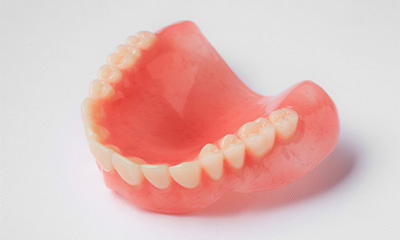
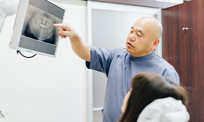
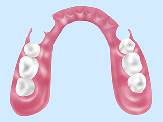
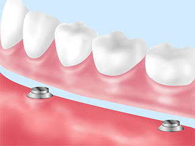
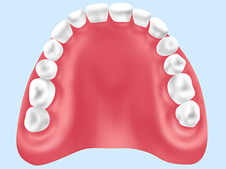
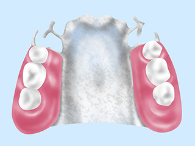
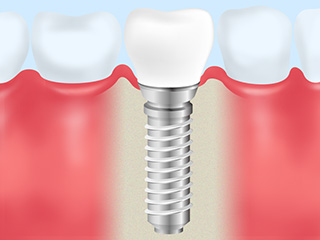
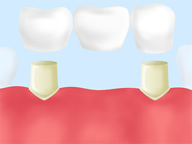
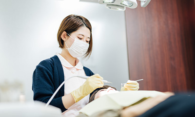

一人でも多くの方に最適な治療を。患者さん目線で、保険診療を中心に提案する「たけだなおや歯科クリニック」は、立川駅から歩いて5分の通いやすい場所にある歯医者です。こちらでは当院で入れ歯治療について詳しくご案内します。
「痛い」「外れやすい」
「咬みにくい」など、
入れ歯の
トラブルを我慢していませんか？
「保険だから」ではなく、「保険でも」しっかりと咬める入れ歯を

よく患者さんから「保険だから仕方ない」というような言葉をお聞きしますが、保険、自費だから「合う」「合わない」、「痛い」「痛くない」ということはありません。保険でも自費でもそういった違いはなく、異なるのは素材や見た目だけなのです。
問題は、その入れ歯治療が患者さんに適しているかどうかということ。保険でもしっかり咬める入れ歯をご提案することは可能です。もちろん対応可能な範囲には限りがありますが、少なくとも何らかのトラブルが生じている現状よりも、良くなるように全力を尽くすことはできます。

当院では、患者さんが入れ歯を入れて、毎日ちゃんと使ってくれるかどうかを大切に考えて製作しています。そのために、まずは良いことも悪いことも併せて、現状をしっかりとご説明します。そして、「予算か、見た目か、機能性か、何を重視するのか」といった患者さんのご要望も丁寧にうかがった上で、それに合わせた入れ歯の製作を行います。
取り扱い入れ歯
-
ノンクラスプデンチャー

金属バネのない入れ歯です。樹脂素材で作るため薄くて軽く、弾力性と吸着性の高さも大きな特徴です。それによって周囲の歯への負担も軽減され、無理なくしっかり咬むことができます。また透明感があるため、見た目も自然です。
-
マグネットデンチャー

神経を取った歯根に磁石を埋め込み、磁力で入れ歯を固定します。しっかり固定できるため咬む機能の回復が期待でき、周囲の歯にも負担が少ない治療法。取り外しが簡単で、メインテナンスしやすいというメリットもあります。
-
シリコンデンチャー

床部分に生体用シリコンを使った入れ歯。吸着性・密着性に優れ、入れ歯と歯茎の間にものが挟まって痛いといったトラブルのリスクを下げることができます。
-
金属床義歯

床部分に金属を使った入れ歯。保険適用の入れ歯と比較すると非常に軽く・薄く作ることができ、食べ物の温度を感じやすいのも大きな魅力です。耐久性・衛生面に優れていることも特徴です。
インプラントやブリッジも含め、一緒にベストな選択肢を考えていきます
失った歯の機能を回復するための治療法は、入れ歯治療だけではありません。当院では豊富な選択肢の中から、患者さんと一緒に考え、患者さんにとって本当に必要な治療を見出していきます。
インプラント治療

「インプラント」と呼ばれる人工歯根を顎の骨に埋め込み、それを土台として人工歯を取りつける治療法です。人工歯にはセラミックを使用するため、美しく、自然な見た目を得ることができます。また顎の骨に直接人工歯根を埋め込むため、硬いものでもしっかり咬めるようになります。外科手術が必要、かつ自費診療ではありますが、見た目・機能面ともにメリットが多いため、多くの注目を集めている治療法です。
ブリッジ

両隣の歯を支えとして、橋（ブリッジ）のように人工歯を渡して装着する治療法。治療にあたり、失った歯の両隣の歯を削る必要があります。また両隣の歯に負担がかかるというデメリットはありますが、しっかり咬めることは大きな魅力です。見た目も、比較的自然な仕上がりになります。
治療後のメインテナンスで、お口・入れ歯の状態を快適に保ちましょう

ピタッと合う入れ歯を作っても、時間が経つとだんだん合わなくなってくることがあります。生活の中で、お口の状態は変化するからです。しかし、自分ではお口の変化に気づけない場合も多いため、入れ歯を長く快適に使用するには、治療後の定期的なチェックとメインテナンスがとても重要です。
そして何よりも、入れ歯治療を受けずに済むように。虫歯や歯周病にならないための予防や早めの治療に積極的に取り組みましょう。